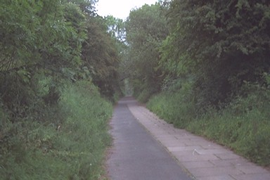

The Silkin Way footpath runs north from Aqueduct along a disused railway, but formerly the canal was over this railway - the railway builders dug down below the canal bed to get a gradual decline. This is the site of the junction of the Coalport and Coalbrookdale branches, and of the Stirchley tunnel.